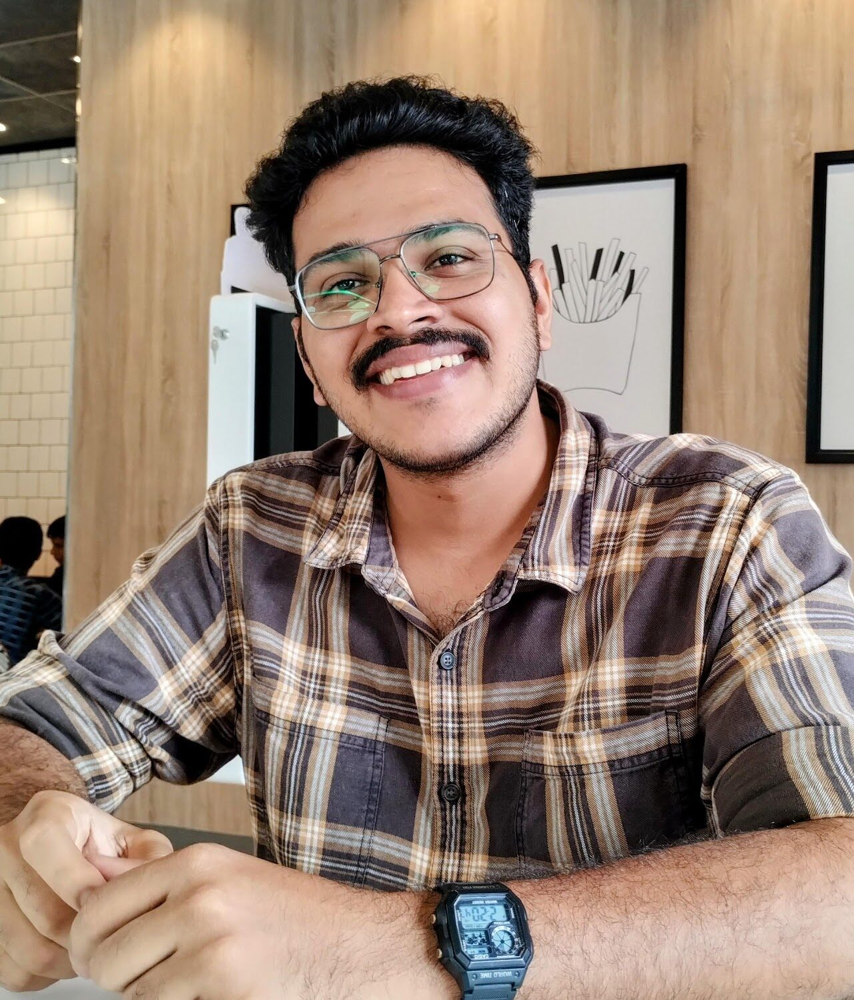

Bone repair
Osteogenic 3D-Printable Radiopaque Fixators
X-ray-visible, early osteogenic fixators for diabetic orthopaedic and craniomaxillofacial repair.
PhD researcher at the Regenerative Biomaterials and Theranostics Laboratory — designing inherently radiopaque, biodegradable implants for orthopaedic repair and locoregional cancer therapy.

X-ray-visible, early osteogenic fixators for diabetic orthopaedic and craniomaxillofacial repair.
Biodegradable imageable embolics enabling locoregional hepatocellular carcinoma therapy.
Early-biomineralizing radiopaque cements engineered for periodontal regeneration.
Radiopaque nanocellulose–brushite composites for periodontal regeneration.
Graduate Aptitude Test in Engineering.
Reclaimed wastewater in the semiconductor industry.
Under the supervision of Prof. G.S. Sailaja.